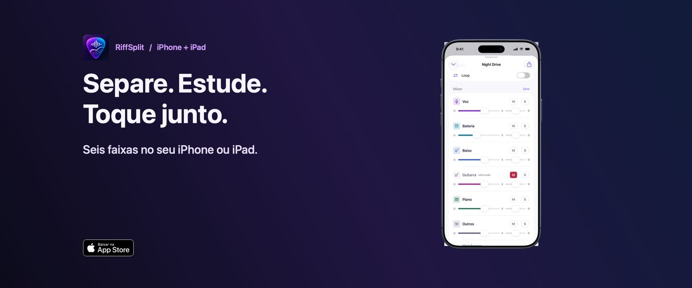

RiffSplit: separe voz, bateria, baixo e guitarra de qualquer música, sem internet
App de estudo musical para iPhone, iPad e Mac. Isole o seu instrumento, tire a sua parte, desacelere o solo e mude o tom, tudo no próprio aparelho, sem conta e sem assinatura.

O que você faz com o RiffSplit
Para quem é
- Músicos de banda, igreja e estúdio: tire a sua parte e ensaie com o playback sem o seu instrumento.
- Quem está aprendendo: ouça só o baixo ou só a bateria, desacelere sem mudar o tom e repita o trecho até sair.
- Professores: prepare material de aula com a faixa isolada em menos de um minuto.
- Cantores: coloque a música no seu tom e ensaie com a base sem a voz original.
Guias práticos
Como funciona
- Toque em + Adicionar e escolha um arquivo de música no app Arquivos.
- O RiffSplit separa as 6 faixas no aparelho. Em um iPhone recente, uma música de 5 minutos leva menos de 1 minuto.
- Abra o player e use o mixer, o tom, a velocidade e o loop para estudar.
Cada música é separada uma única vez e fica na sua biblioteca.
Perguntas frequentes
O RiffSplit precisa de internet?
Não. A separação das faixas acontece no próprio iPhone, iPad ou Mac. A música não é enviada para nenhum servidor e não é preciso criar conta.
Quais faixas o RiffSplit separa?
Seis: voz, bateria, baixo, guitarra, piano e outros. Cada uma tem volume, pan, mudo e solo no mixer.
Dá para mudar o tom sem mudar a velocidade?
Sim. O tom vai até 12 semitons para cima ou para baixo e a velocidade de 50% a 150%, um sem alterar o outro.
O RiffSplit é assinatura?
Não. O download é grátis e separa 30 segundos de cada música. Uma compra única no app libera músicas inteiras e a exportação, no iPhone, iPad e Mac com a mesma conta Apple.
Posso usar músicas do Spotify ou do Apple Music?
Não. Músicas de streaming são protegidas e nenhum app consegue abri-las. Use arquivos seus ou com direito de uso, em MP3, AAC/M4A, ALAC, WAV, AIFF, FLAC ou vídeo.
Que formatos o RiffSplit exporta?
A mixagem ou cada uma das 6 faixas, em AAC, WAV ou Apple Lossless (com o desbloqueio).